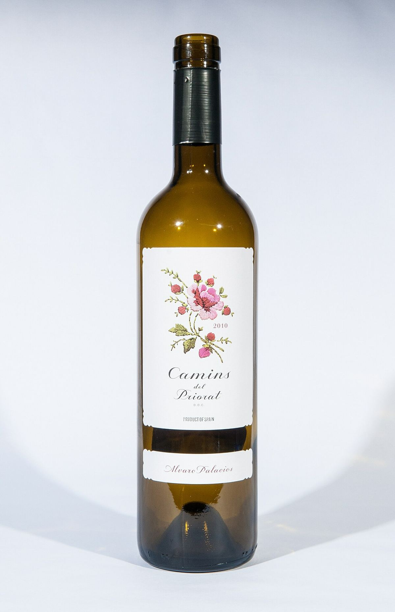
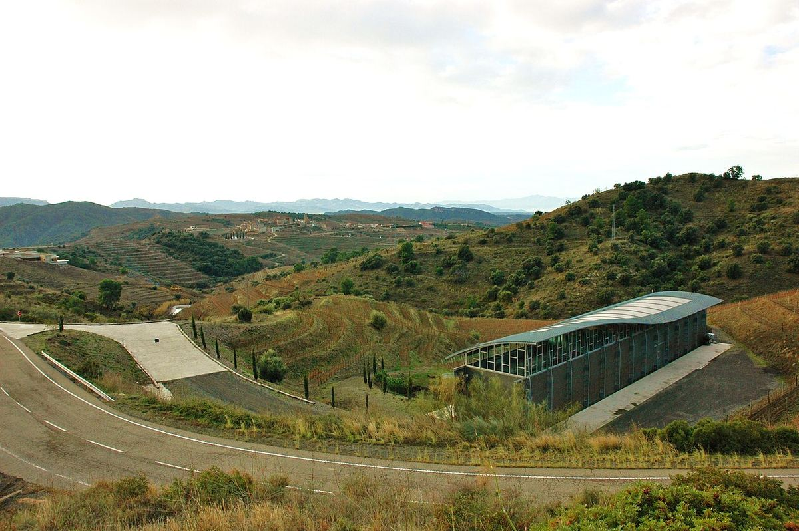

TINTO

Bodega de Álvaro Palacios en Gratallops, una de las protagonistas del renacimiento del Priorat a finales de los años ochenta, centrada en la garnacha y la cariñena de viñas viejas sobre llicorella.

Álvaro Palacios, miembro de una familia bodeguera de Rioja (Palacios Remondo, en Alfaro), llegó al Priorat a finales de los años ochenta. Junto a otros pioneros, entre ellos René Barbier, apostó por recuperar una comarca de viñedos escarpados que llevaba décadas en declive tras la filoxera y el éxodo rural. Aquel pequeño grupo de proyectos cambió la imagen de la zona y contribuyó a que el Priorat se convirtiera más tarde en Denominación de Origen Calificada.
La bodega trabaja en el entorno de Gratallops, sobre la característica llicorella, una pizarra descompuesta de color oscuro que obliga a las raíces a profundizar y da rendimientos muy bajos. Muchas parcelas se cultivan en terrazas o en pendientes pronunciadas donde la mecanización es casi imposible. Las variedades protagonistas son la garnacha y la cariñena, a menudo de cepas viejas en vaso.
La gama se organiza de forma escalonada, siguiendo una lógica similar a la de Borgoña: un vino de comarca (Camins del Priorat), un vino de pueblo procedente de Gratallops (Gratallops Vi de la Vila), vinos de finca como Finca Dofí y Les Aubaguetes, y el célebre L'Ermita, de una ladera de garnacha vieja orientada al norte. Con los años, el estilo de la casa ha evolucionado hacia vinos más frescos y transparentes, con menos protagonismo de la madera y más expresión del suelo. Álvaro Palacios también dirige proyectos en el Bierzo (Descendientes de J. Palacios, con su sobrino Ricardo Pérez) y en la bodega familiar de Rioja Oriental.
